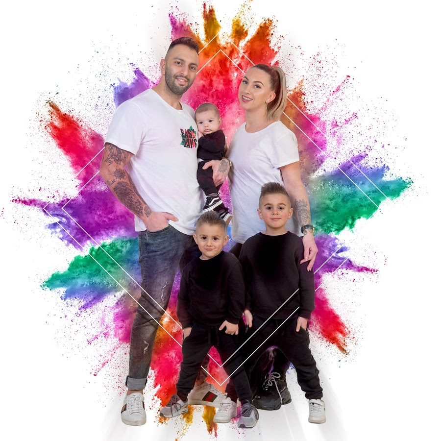
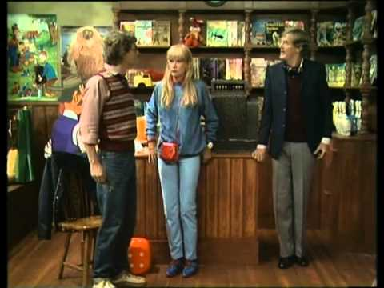

Medici familie
 Meniu Acasa Medici familie Abonamente Abonament 220 lei - 12 luni Abonament 350 lei - 24 luni Adauga afacere Articole Anunturi Contact Login Inregistrare
Medic Familie Viorica Pascu
CMI Dr. Strimbeanu Elena-Carmen
CMI Dr. Valcu Dumitru - Medicina de familie Tulcea
Clinica Medicala Dr. Agoston - Timisoara
Dr. Pavel Liana
Dr. Avram Mihaela & Dr. Melinte-Popescu Marian George * Medici specialisti medicina de familie competenta echografie generala
Dr. Achim Olimpiu Florin - medic primar medicina de familie
Dr. Zurbau Emilia
Medici familie
Cauta
Articole blog
Adicții moderne – dependența de internet
Tehnologiile moderne oferă copiilor, adolescenților și cadrelor didactice avantaje incontestabile în educarea, dezvoltarea și dobâ...
DetaliiTulburările de alimentație la copii
Termenul de tulburări de alimentație include un spectru heterogen de situații definit printr-un aport oral inadecvat cantitativ sau calitativ,...
DetaliiCele mai noi anunturi
Medic de familie | Vaslui
Angajăm medic (medicină de familie) pentru cabinet medical în județul Vaslui cu două puncte de ...
Medic de Familie, Anglia!
VPL Healthcare, in colaborare cu Sistemul de Sanatate Public din Anglia si scoala de Limbi Straine A...
Medic specialist
Angajam medic specialist, medicina de familie ,zona rurala Dobrogea ,se ofera conditii de lucru exce...
Medic Specialist
Angajam medici specialist de familie pentru jud Tulcea , zona rurala pitoreasca , se ajunge doar pe ...
Angajam medic specialist
Dacă sunteți calificat ca si medic de familie și căutați un loc de munca în străinătate înt...
ASISTENTA MEDICINA DE FAMILIE
Q Med Stomatologie (5 cabinete zona Brancoveanu + 1 cabinet Popesti Leordeni) cautam asistent/a medi...
MEDICI DE FAMILIE BRETANIA, FRANTA
ACTIVE MEDICAL INTERNATIONAL recruteaza MEDICI DE FAMILIE, in regim liberal, pentru regiunea BRETANI...
Cel mai modern laborator de analize robotizat din Romania, la Oradea
Spitalul Clinic Judetean din Oradea va avea, in vara anului 2020, primul si cel mai modern laborator...
Medici Familie
Spre deosebire de medicii specializați în patologia diverselor organe și sisteme, medicul de familie este pregătit să-și privească pacientul ca un întreg, indiferent de vârstă sau sex. Și este acel tip de medic specialist care poate fi alături de noi de la naștere, până la o vârstă înaintata. Atunci când apare o afecțiune care necesită prezența unui alt tip de specialist, medicul de familie va fi cel care ne va îndruma către unul. Dacă aceasta boală nou diagnosticată va avea o evoluție de lungă durată, tot medicul de familie este cel care coordonează planul de tratament și urmărirea adecvată a pacientului.
În primul rând medicul de familie asigura asistenta medicala si sociala tuturor pacientilor indiferent de vârsta, sex sau patologie si reprezinta legatura dintre comunitate si sistemul national de sanatate. Medicul de familie abordeaza pacientul atât în conditii de sanatate, cât si în conditii de boala; are rolul de a supraveghea si mentine starea optima de sanatate si de a promova un stil de viata sanatos, de a depista o boala cronica in faza incipienta si de a preveni si trata complicatiile unei afectiuni.
Meniu
Acasa Medici familie Adauga afacere Articole Anunturi ContactLink-uri utile
Abonament 220 lei - 12 luni Abonament 350 lei - 24 luni Promoveaza-ti afacerea Termeni si conditii Securitatea platilor online S.O.L. ANPC Politica de confidentialitate Cabinete Terapii Cabinete Radiologie Cabinete Optica Oftalmologie Echipamente Industriale Cabinete Dermato Venerice Cabinete Cardiologie Cabinete Psihologie Cabinete Psihiatrie Cabinete Avocati Autism Romania Echipamente ProtectieInformatii contact
Strada Sfanta Vineri, nr. 76, bl. D 26, Pitesti, jud. Arges.
0372.902.542 contact@medici-familie.ro
© 2019 Copyright by medici-familie.ro
Acest site foloseste cookie-uri. Prin continuarea navigarii, esti de acord cu modul de utilizare a acestor informatii. Am inteles Despre cookie-uri
